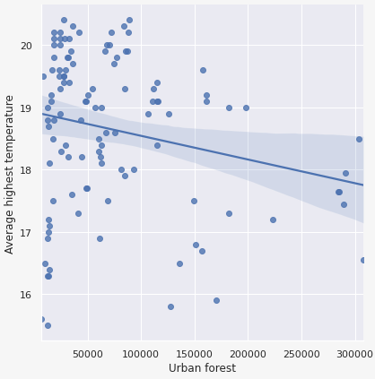

이정윤 · 신주영
시각화로 알아보는
산림복지
서론
'숲세권'

서론
'산림복지' 개념,
산림복지 시설 현황과 관련한 시각화
'도시숲(생활권 도시숲)'의 개념,
수치로 확인하는 도시숲 확충의 간접적, 직접접 이익
'도시숲(생활권 도시숲)'의 개념,
수치로 확인하는 도시숲 확충의 간접적, 직접접 이익
서론
산림복지
좁은 의미
산림을 기반으로 한 서비스
(휴양, 치유, 교육 등)
넓은 의미
조림, 숲 가꾸기를 통한
공익적 편익 증진
좁은의미의 산림복지
유형별 산림복지 시설
지역별 산림복지 시설
데이터 수집 및 전처리
-
1
데이터 수집
산림복지시설_draft.xlsx
✔ 8개 유형, 총 956개
✔ 한국산림복지진흥원, 산림청 -
2
데이터 전처리
산림복지시설_final.xlsx
✔ dataframe 정리
✔ 누락된 주소정보 수작업 수정 -
3
위경도 추출
df_latlng.xlsx
✔ googleAPI 사용
✔ 미확인 시설은 google maps에서 확인
설문지
산림여가 활동 설문조사
(한국산림복지진흥원, 1만명 대상)
설문지
상관관계
설문조사 결론
✔ 산림복지 시설까지 이동거리가 멀면
사용빈도가 적은 경우가 많다.
✔ 산림복지 시설 사용빈도가 높을수록
만족도가 높은 경우가 많다.
→ 생활권 주변 산림복지 시설의 확충!
도시숲, 생활권 도시숲이란?
도시숲, 생활권 도시숲분포 현황(2019)
넓은의미의 산림복지
도시숲의 효과
출처:김민욱,'대프리카'대구, 폭염 일수 줄어든 이유는?..."도시숲"' <MBC 뉴스데스크>, 2021.08.10 | 박진호, '미세먼지 줄이고, 폭염땐 기온 내리고...춘천의 "도시숲" 실험', <중앙일보>, 2021.02.24
도시숲 확충의 간접적 이익
1) 기온 완화
2) 미세먼지 흡수/흡착
3) 산소방출/이산화탄소 흡수
4) 소음 감소
상관관계
열대야일수·도시숲면적
폭염일수·도시숲면적
평균최고기온·도시숲면적 
✓ 열대야일수(-0.3), 폭염일수(-0.1), 평균 최고기온(-0.22) 모두 음의 상관관계를 가진다.
✓ 앞으로 도시숲을 더 많이 늘린다면, 더 확실한 효과를 얻을 가능성이 있다.
결론
-
유형별, 지역별 산림복지 시설은
고르게 분포되어야 한다. -
도시 생활권 내에서 사용할 수 있는
산림복지 시설 및 도시숲의 양적, 질적 향상이 필요하다.
출처 및 정보제공
- 한국산림복지진흥원산림교육센터 조성현황 | 치유의 숲 등
- 산림청 2021년 유아숲 체험원 등록현황 | 자연휴양림 찾기 등
- 기상청 열대야, 폭염일수, 평균최고기온
- e-나라지표 전국 도시숲 현황(05-19)
- 산림 빅데이터 거래소 산림 휴양복지 통계 설문정보
- 그 외 참고자료 생활권 산림면적에 따른 여름철 평균 기온(산림 빅데이터 거래소) 등
* 세부적인 사용 데이터 정보는 보고서 참고
Team Coley 이정윤 · 신주영